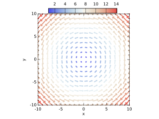
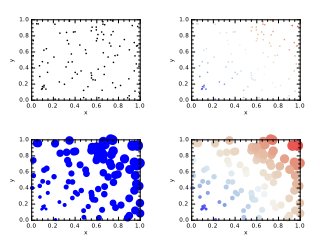

Procedures
| Procedure | Location | Procedure Type | Description |
|---|---|---|---|
| bar | plplotlib_mod | Subroutine | Create a bar graph |
| barh | plplotlib_mod | Subroutine | Create a horizontal bar graph |
| binData | plplotlib_mod | Function | Count data in each bin |
| box | plplotlib_mod | Subroutine | Set x,y and plot labels |
| colorbar | plplotlib_mod | Subroutine | Add a colorbar to the top of the plot |
| colorbar2 | plplotlib_mod | Subroutine | Add a colorbar to the top of the plot |
| colorize | utilities_mod | Function | Add terminal format codes to coloize a string |
| contour | plplotlib_mod | Subroutine | Plot contour lines |
| contourf | plplotlib_mod | Subroutine | Plot filled contours |
| doBar | examples_prg | Subroutine |
|
| doContour | examples_prg | Subroutine |
|
| doError | examples_prg | Subroutine |
|
| doFillBetween | examples_prg | Subroutine |
|
| doHist | examples_prg | Subroutine |
|
| doLegend | examples_prg | Subroutine |
|
| doLogPlot | examples_prg | Subroutine |
|
| doPlot | examples_prg | Subroutine |
|
| doQuiver | examples_prg | Subroutine |  |
| doScatter | examples_prg | Subroutine |  |
| doSurface | examples_prg | Subroutine |
|
| endsWith | utilities_mod | Function | Test if text ends with str |
| errorbar | plplotlib_mod | Subroutine | Plot error bars for a set of data points |
| f | animate_prg | Function | |
| figure | plplotlib_mod | Subroutine | Create a new figure |
| fillBetween | plplotlib_mod | Subroutine | Fill space between two lines |
| fillBetweenx | plplotlib_mod | Subroutine | Fill space between two lines |
| flatten | utilities_mod | Interface | Reduce an array to one dimension |
| hist | plplotlib_mod | Subroutine | Create a histogram |
| int2char | utilities_mod | Function | Convert an integer to a character |
| labels | plplotlib_mod | Subroutine | Set x,y and plot labels |
| legend | plplotlib_mod | Subroutine | Create legend for plot data |
| linspace | utilities_mod | Function | Return an array of evenly-spaced values |
| makeLogo | logo_prg | Subroutine | |
| mean | utilities_mod | Function | Compute the arithmetic mean of an array |
| meshGridX | utilities_mod | Function | Construct a 2d array of X values from a structured grid |
| meshGridY | utilities_mod | Function | Construct a 2d array of Y values from a structured grid |
| mixval | utilities_mod | Interface | Return a 2-vector comprising the minimum and maximum values of an array |
| plot | plplotlib_mod | Subroutine | Plot data using lines and or markers |
| plot3 | plplotlib_mod | Subroutine | Plot data using lines and or markers |
| printTypes | kinds_mod | Subroutine | Print the integer kinds for each real type |
| quiver | plplotlib_mod | Subroutine | Plot vectors |
| randomNormal | utilities_mod | Function | Return a sample from an approximate normal distribution with a mean of \(\mu=0\) and a standard deviation of \(\sigma=1\). In this approximate distribution, \(x\in[-6,6]\). |
| randomUniform | utilities_mod | Function | Return a sample from a uniform distribution in the range \(x\in[-1,1]\). |
| real2char | utilities_mod | Function | Convert a real to a character |
| scatter | plplotlib_mod | Subroutine | Create scatter plot of data |
| setup | plplotlib_mod | Subroutine | Setup PlPlot library, optionally overriding defaults |
| show | plplotlib_mod | Subroutine | Show the plots end finialize the PlPlot library |
| showProgress | utilities_mod | Subroutine | Show a progress bar with a message |
| span | utilities_mod | Interface | Return a the maximum-minumum values of an array |
| startsWith | utilities_mod | Function | Test if text starts with str |
| stdev | utilities_mod | Function | Compute the standard deviation of an array |
| subplot | plplotlib_mod | Subroutine | Create a set of axes on a figure |
| surface | plplotlib_mod | Subroutine | Plot a 3d surface |
| ticks | plplotlib_mod | Subroutine | Set the ticks for the axes |
| title | plplotlib_mod | Subroutine | Set plot title |
| wireframe | plplotlib_mod | Subroutine | Plot a 3d wireframe |
| xlabel | plplotlib_mod | Subroutine | Set x-label |
| xlim | plplotlib_mod | Subroutine | Set the limits of the x-axis |
| xticks | plplotlib_mod | Subroutine | Set the ticks for the x-axis |
| xylim | plplotlib_mod | Subroutine | Set the x and y ranges of the plot |
| xyzlim | plplotlib_mod | Subroutine | Set the limits for a 3d plot |
| ylabel | plplotlib_mod | Subroutine | Set y-label |
| ylim | plplotlib_mod | Subroutine | Set the limits of the y-axis |
| yticks | plplotlib_mod | Subroutine | Set the ticks for the y-axis |